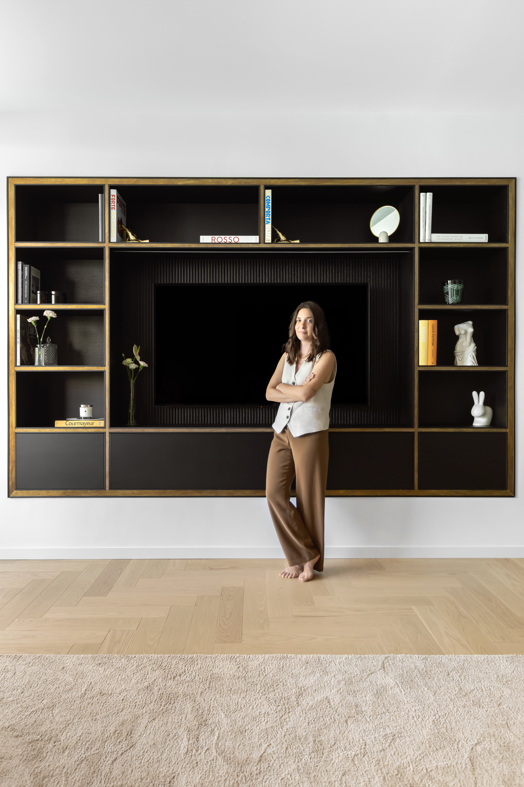

Studio
Lo studio SV Architetti è uno studio fondato dall'architetto Sara Valleri nel 2023 con sede a Milano.
La passione per i viaggi e la scoperta di nuove culture si riflette interamente sui progetti dello studio. Il viaggio è formazione, esperienza, conoscenza, incontro, scambio, cultura, visione e immaginazione.
Lavorare con materiali autentici, ricercati che raccontano una storia, un viaggio e una cultura di artigianalità rappresentano una vera e propria convinzione progettuale con cui lo studio avvia qualsiasi tipo di progetto.
Si viaggia per ricordare, comprendere l'identità del luogo, catturare una suggestione, apprendere nuove tecniche dagli artigiani del luogo e acquisire nuovi sapori e odori.
I progetti dello studio spaziano dall'architettura d'interni, case private e spazi commerciali. Lo studio segue interamente il progetto in ogni sua fase, dal concept alla realizzazione fino al dettaglio.
Il rapporto con i clienti, la comprensione delle loro esigenze e l'attenzione per i dettagli si traduce in uno scambio continuo e meticoloso con gli artigiani del luogo.
Il risultato è un progetto sartoriale — un equilibrio tra classico, moderno e contemporaneo che porta con sé la condivisione di emozioni mantenendo l'identità del cliente e del luogo.